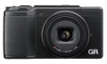

器材库 > 不可换镜头数码相机 > GR II

规格总览
发布日期
2015-06-18
影像规格
影像传感器
CMOS
影像传感器尺寸
23.7×15.7mm
有效像素
约1620万
影像处理器
GR ENGINE V影像处理器
静态图像尺寸
【3:2】4928×3264(L)、3936×2608(M)、2912×1936(S)、1280×864(XS)【4:3】4352×3264(L)、3488×2608(M)、2592×1936(S)、1152×864(XS)【1:1】3264×3264(L)、2608×2608(M)、1936×1936(S)、864×864(XS)
静态图像格式
JPEG, RAW
短片尺寸
Full HD (1920×1080、30fps/25fps/24fps)HD (1280×720、60fps/50fps/30fps/25fps/24fps)VGA (640×480、30fps/25fps/24fps)
短片格式
MPEG4-AVC/H.264
镜头和对焦
镜头结构
7片/5组
非球面镜片
2片
焦距
18.3mm
等效35mm画幅焦距
28mm
最大光圈
f/2.8
最近对焦距离
30cm, 微距10cm
对焦模式
多点对焦、单点对焦、精确对焦、智能跟踪AF、手动对焦、快拍、无限远、脸部识别优先(仅在自动模式下、效果为「人物」时有效)、连续AF、完全自动对焦
曝光控制
测光模式
中央重点测光, 点测光, 矩阵测光
曝光模式
程序AE、光圈优先AE、快门优先AE、快门光圈优先AE、手动曝光
快门速度
1/4000～300秒、B（长时间）、T（定时）
曝光补偿
±4EV以1/3EV级调整
ISO感光度
AUTO、AUTO-HI(可设定最高/最低值)、手动(ISO100～25600)
白平衡
自动、复合AWB、室外、阴影、阴天、白炽灯1、白炽灯2、日光色荧光灯、中性白色荧光灯、冷白色荧光灯、暖白色荧光灯、CTE、CT(色温设定）、M（手动设定）
拍摄模式
自动摄影模式、程序偏移模式、光圈优先、快门优先、快门＆光圈优先、手动曝光模式、动画、个人设定模式
创意滤镜
黑白、黑白(TE)、高对比度黑白、正负逆冲、正片、影像漂白、怀旧、微型模式、移位裁切、高色调、HDR风格、亮度控制、光泽控制、 轻微、风雅、鲜艳、人像
闪光灯
内置闪光灯
弹出式
闪光模式
自动, 慢速同步, 强制闪光, 无线, 手动, 减轻红眼慢速同步, 自动+红眼减轻 , 减轻红眼强制闪光
闪光指数
5.4（相当于ISO 100）
闪光涵盖范围
约0.2m～3.0m（ISO 自动）
取景规格
LCD尺寸
3.0英寸
LCD像素
约123万
文件输入/输出
内置存储容量
约54MB
存储卡
SD/SDHC, SDXC
数据接口
USB2.0
视频/音频接口
AV 输出, HDMI 输出
无线功能
Wi-Fi, NFC
电源
电池
可充电电池DB-65
续航能力
静态图像拍摄：约320张动画拍摄时间：约45分钟
外接电源
AC交流电源套装（另售）
外观
材质
机身选用镁合金材料
颜色
黑色
尺寸
约117.0×62.8×34.7mm
重量
仅机身约221g / 含电池和存储卡约251g
该产品暂无存档的网友点评
产品图 / 样片
GR II
评测 / 相关文章
- 详细内容 （存档）
- ［资讯］28mm正面对抗 理光富士谁是街头霸王 （存档）
- ［资讯］玩转器材 | 巧手自制理光GR光学取景器 （存档）
- ［资讯］性能扩展 理光公布GR II最新固件升级 （存档）
- ［资讯］小有改进 DxOMark公布GRII传感器成绩 （存档）
- ［资讯］理光发布GRII Silver Edition （存档）
- ［资讯］理光发布GRII/GR用微距转换镜头GM-1 （存档）
- ［资讯］理光发布GRII和GR固件更新 （存档）
- ［资讯］理光发布GR II Premium限量版 （存档）
- ［资讯］理光GR II官方样片欣赏 （存档）